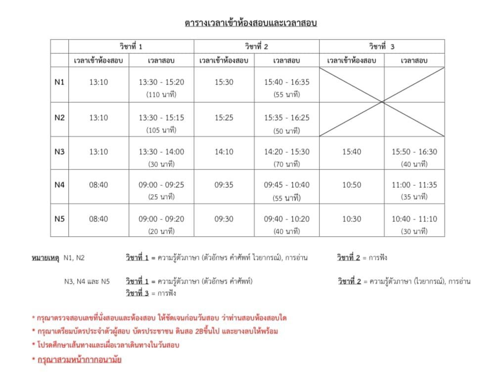
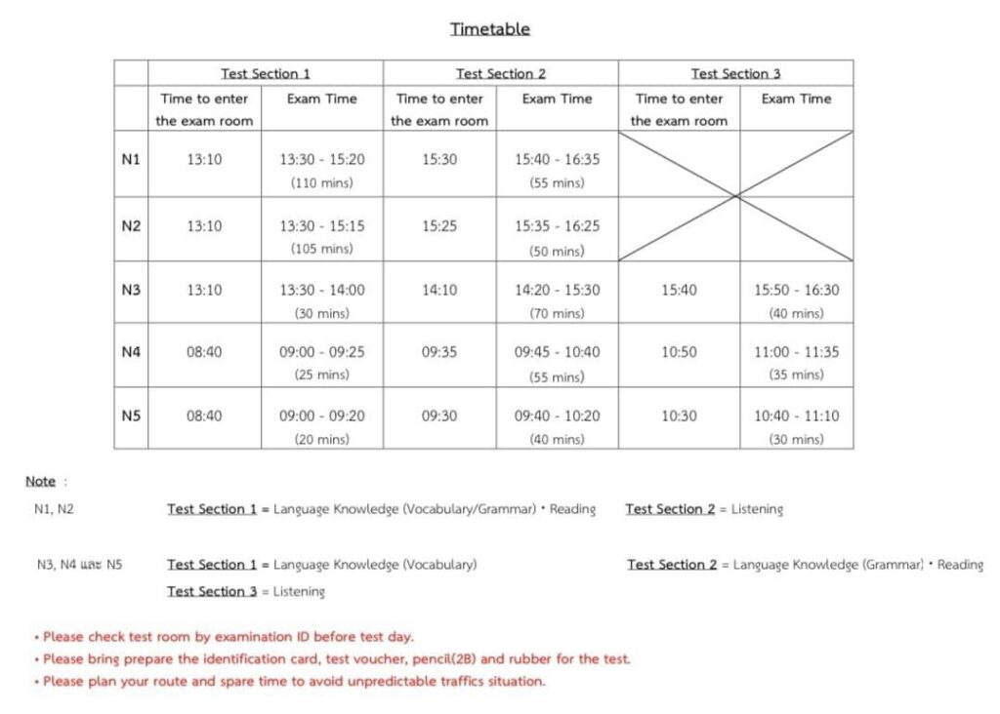
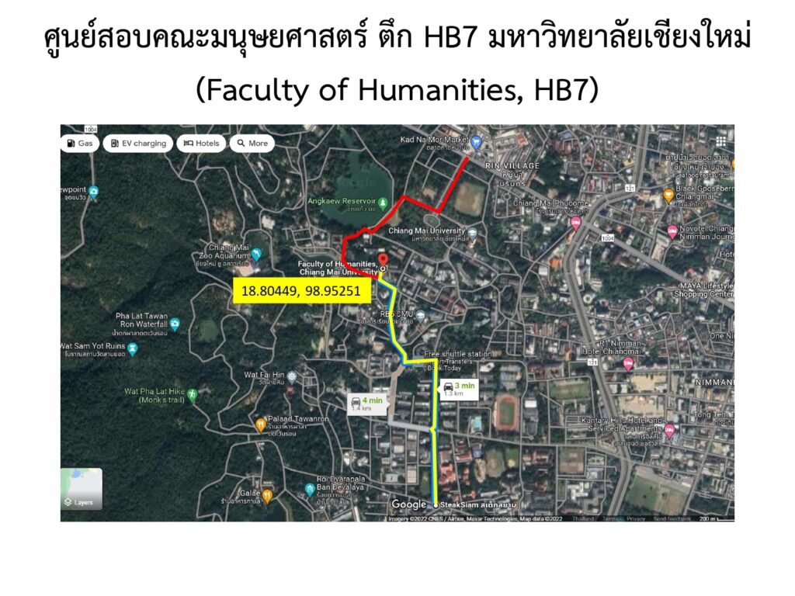
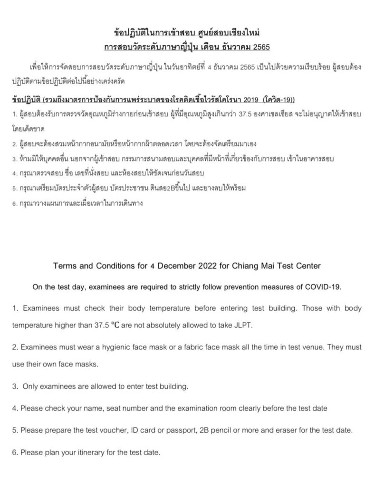
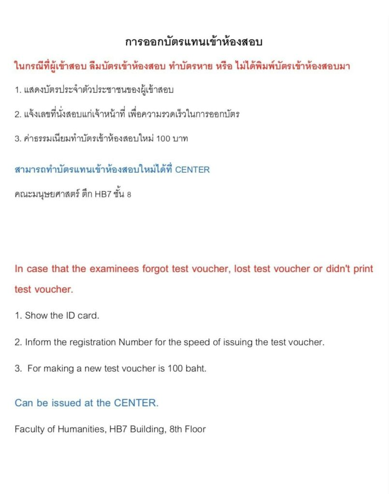

ประกาศตารางห้องสอบวัดระดับความสามารถภาษาญี่ปุ่น (JLPT) ครั้งที่ 2/2022
เนื้อหาตามประกาศ ณ วันที่เผยแพร่ โปรดตรวจสอบกำหนดการและเงื่อนไขก่อนดำเนินการ
ประกาศตารางห้องสอบวัดระดับความสามารถภาษาญี่ปุ่น (JLPT)
ครั้งที่ 2/2022 ศูนย์สอบเชียงใหม่
[Announcement JLPT Rooms 2/2022 Chiang Mai Test Center]
วันอาทิตย์ที่ 4 ธันวาคม 2565 (4 December 2022)
ณ ศูนย์สอบคณะมนุษยศาสตร์ ตึก HB7 (Faculty of Humanities, HB7) มหาวิทยาลัยเชียงใหม่
N4 และ N5 พร้อมหน้าห้องสอบ เวลา 08.30 น.(สอบช่วงเช้า)
N1, N2 และ N3 พร้อมหน้าห้องสอบ เวลา 13.00 น.(สอบช่วงบ่าย)
ประกาศรายชื่อแยกเฉพาะ N1
เลขที่นั่งสอบ DEC-N1.pdf – Google ไดรฟ์
ประกาศรายชื่อแยกเฉพาะ N2
เลขที่นั่งสอบ DEC-N2.pdf – Google ไดรฟ์
ประกาศรายชื่อแยกเฉพาะ N3
เลขที่นั่งสอบ DEC-N3.pdf – Google ไดรฟ์
ประกาศรายชื่อแยกเฉพาะ N4
เลขที่นั่งสอบ DEC-N4.pdf – Google ไดรฟ์
ประกาศรายชื่อแยกเฉพาะ N5
เลขที่นั่งสอบ DEC-N5.pdf – Google ไดรฟ์










เปิดแผนที่ใน Google Maps